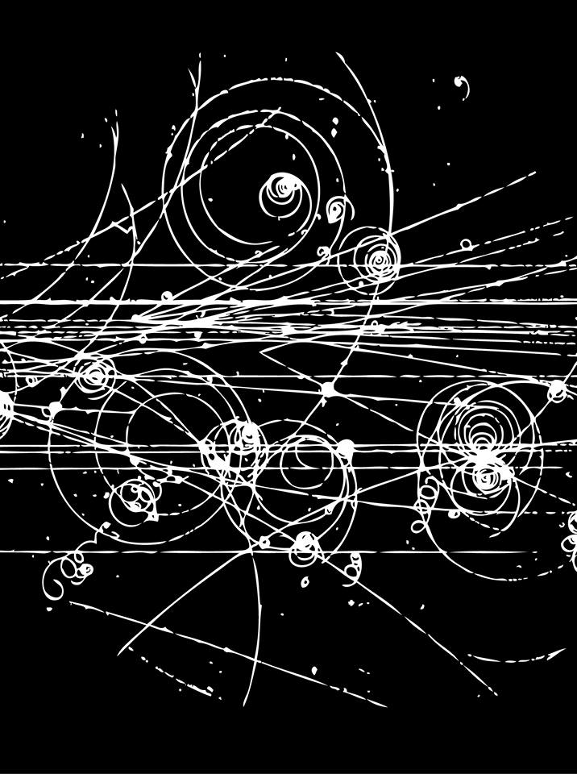

The first quarter of this seminar will focus on working through basic computations
in quantum field theory with the possible goal of understanding some of QED. We will
work from the physics perspective while occassionally making contact with relevant mathematics.
The second quarter is planned to be more mathematical from the outset, with possible
topics including axiomatics, supergeometry, the BV formalism, etc.
lecture 2: canonical quantization — John [10/04/2017]
We will discuss some generalities of quantum theory and the procedure
of canonical quantization. Then we will specialize to the theory of
the free scalar field on Minkowski space and calculate the spectrum.
suggested reading: Srednicki 3, Peskin/Schroeder 2.3
lecture 3: the Heisenberg picture & causality — Nilay [10/11/2017]
We will review the canonical quantization of the free scalar field from
last time before rewriting the setup in the Heisenberg picture, where the
time-dependence of the theory is present in the operators. This allows
us to discuss causality, examining amplitudes and commutators along timelike
and spacelike intervals.
suggested reading: Peskin/Schroeder 2.3-2.4